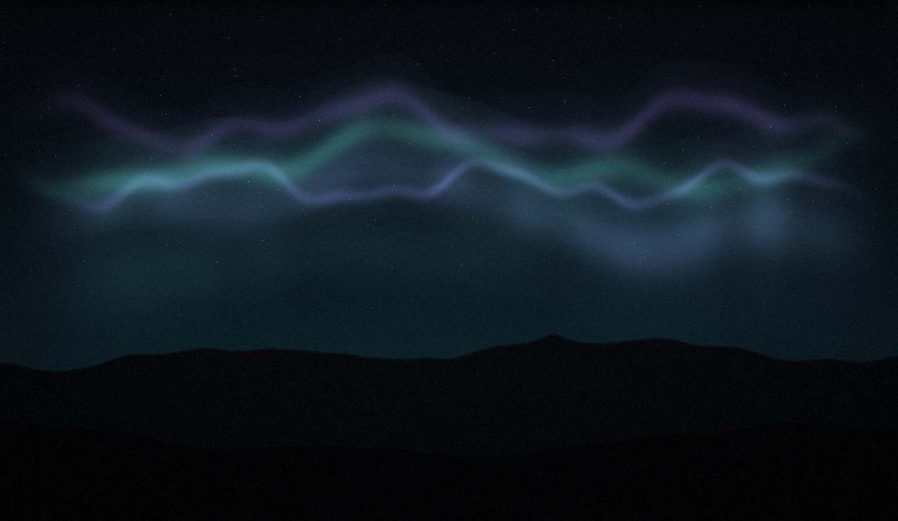

Words, not puzzles.
Every button says what it does: Internet, Photos, Your files. No little pictures to guess at.
Computers got complicated. Yours doesn’t have to be.
It’s free. Windows and your files stay, and you can go back.
Not sure which Windows you have? Press Get AurOS. Setup checks, and changes nothing if it can’t go on.
About 25 to 60 minutes. Tried so far on a virtual Windows 11 computer, not a real one.
AurOS needs Windows 10 or 11, and this computer may have an older Windows. AurOS Setup checks first and tells you.
AurOS goes on a Windows computer, not a phone. Send yourself the link:
This is a Mac, and AurOS goes on a Windows computer. Send yourself the link:
This is a Chromebook, and AurOS goes on a Windows computer. Send yourself the link:
This computer isn’t running Windows, and AurOS goes on a Windows computer. Send yourself the link:
It has a different kind of chip inside (called ARM, as in Snapdragon laptops), and AurOS only works on the usual kind. Have another Windows computer? Send yourself the link:
It has the older, 32-bit kind of Windows, and AurOS needs the 64-bit kind. Have another Windows computer? Send yourself the link:
Every button says what it does: Internet, Photos, Your files. No little pictures to guess at.
Help, Wi-Fi, Bigger text and Turn off live along the bottom, always. This page has the same bar. Go on, press Bigger text.
You pick one while AurOS goes on. To change it later, press Settings, then How this computer works.

A bar along the bottom, just like now.

Your programs in a row along the bottom.
Big buttons. Nothing ever gets hidden.

Each program fills the whole screen.
Your browser and Windows haven’t met AurOS before, so they ask if you trust it. They ask about every new program. Press the button in the numbered circle.
Press Get AurOS. Your browser asks if you trust the file. Press Keep, then Keep anyway.
Open the file. Windows asks, maybe twice. Press Run anyway, then Yes.
AurOS Setup checks the computer and lets you pick a look. The computer restarts once, by itself.
After the restart, AurOS asks if everything works. Until you say yes, Windows and your files are meant to stay on this computer.
Press No, go back to Windows and Windows starts the next time. Nothing is deleted.
Does everything work?
Before you press anything, here’s what isn’t done yet.
So far it has been tried on a virtual Windows 11 computer, not a real one. You’d be one of the first.
AurOS has its own programs for the internet, photos, music and notes, and many more, free.
AurOS is made to keep Windows and your files. Still, copy the photos you treasure onto a memory stick first.
It’s the part we’re proudest of. Here it is.
Not in AurOS yet
Wishes is AurOS learning to do what you ask, in your own words. Type it or say it, then press Yes. It’s built, but it isn’t switched on in this first version.
Some of the ideas it offers:
Psst. Type the word .

Yes. No ads and no subscription.
AurOS is made to keep your files, but any change to a drive carries some risk. Copy the photos you treasure onto a memory stick first.
No. If you can press a button that says what it does, you can use AurOS. And Help is always at the bottom of the screen.
Press Help at the bottom of this page. It opens a one-page guide to print for whoever helps you. AurOS will never phone you or ask for a card number, a password or gift cards.

AurOS goes on a Windows computer. Send yourself the link and open it there.
The sky behind this is AurOS’s own night wallpaper.